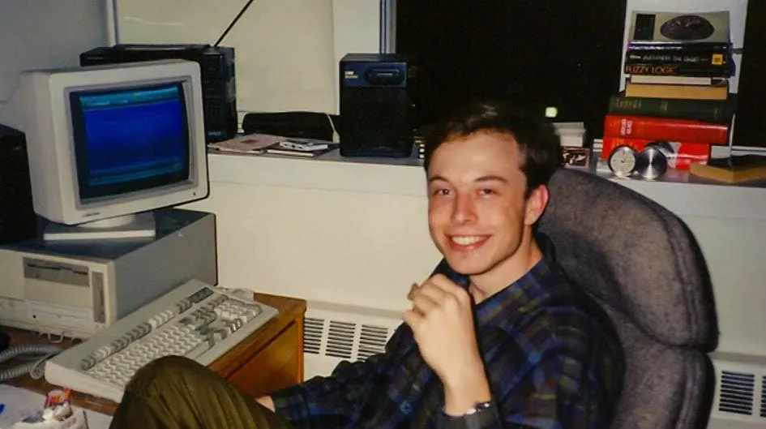
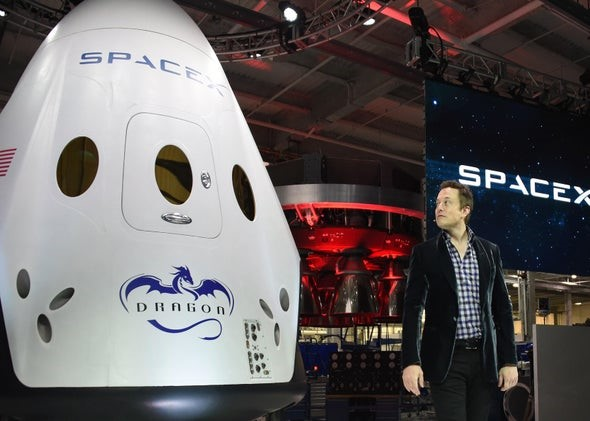

Elon Musk


Here's a summarized timeline of Elon Musk's life:
-
June 28, 1971 - Elon was born in Pretoria, South
Africa.
-
1981 - Elon Musk started becoming interested in
computing with the Commodore VIC-20 and even taught himself computer
programming.
-
1983 - By age 12, Elon Musk sold his first ever
game "Blastar" to a magazine that was called PC and Office
Technology for $500.
-
June 1989 - Elon Musk, age 17, had to move to
Canada in order to attend Queen's University. He planned to go to
the United States and it was easier coming from Canada.
-
1992 - Elon Musk studied Business and Physics at
the University of Pennsylvania graduating with an undergraduate
degree in economics and was able to stay for a second bachelor's
degree in studying physics.
-
1995 - Elon Musk started an internet city guide web
software company Zip2 with his brother Kimbal.
-
1999 - Zip2 was sold to Compaq for $307 million
USD. Elon Musk cofounded X.com with $10 million coming from the sale
of Zip2
-
2000 - X.com merged with Confinity in order to form
PayPal.
-
October 2000 - Elon Musk got fired as CEO of PayPal
over his desire for PayPal's Unix-based infrastructure to be moved
to Microsoft Windows.
-
2001 - Elon Musk started conceptualizing the Mars
Oasis in an attempt to raise public interest in space exploration.
-
May 2002 - Elon Musk founded SpaceX with $100
million USD of his own project becoming CEO and CTO.
-
October 2002 - eBay bought PayPal for $1.5 billion
USD. Elon Musk got $165 million.
-
February 2004 - Elon Musk joined Tesla's board of
directors as Chairman leading the Series A round of investment.
-
2006 - Elon Musk provided the financial capital and
concept for SolarCity which were founded by his cousins Pete Rive
and Lyndon. SpaceX started to get various contracts from NASA to
send cargo and astronauts to the ISS.
-
2007 -Elon Musk became CEO and product architect of
Tesla.
-
2010 - The Musk Foundation with Solar City donated
a 25-kW solar power system to the official South Bay Community
Alliance's hurricane response center in Coden, Alabama.
-
2011 - Elon Musk announced plans to send humans to
Mars in 10-20 years.
-
May 25, 2012 - SpaceX Dragon docked on the ISS.
-
2016 - SolarCity was acquired by Tesla. Neuralink
was co-founded by Musk. Musk owned 54% of SpaceX stocks giving him
78% voting shares.